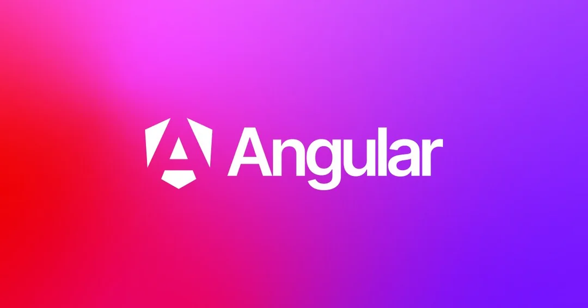
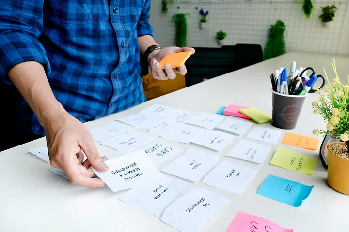

Jesús Sanz
About
My name is Jesús Sanz and I live in Spain. Currently, I work for Hiberus Technology as well as contributing to open source projects on the internet. Some of the technologies or frameworks with which I currently work are: Angular, React JS, HTML5, SCSS, Bootstrap or Material.
I love to practice sports such as snowboarding, ping pong, hiking or swimming. I collaborate with different non-profit associations and manage various projects to make my community a better place. When I still have some time left, I love watching movies, reading or playing video games.

Articles
Below is a list of my most recent articles.


Contact Me
I put a contact form at your disposal. I am open to private and open source projects that encourage the improvement of my skills as a developer.